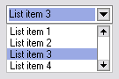
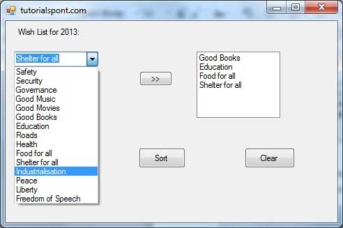

Week 9 - Design patterns
Date: 2025-03-19
Overview
Patterns for UI design
Design patterns are identified common design considerations and issues. Our homework reading is a list of common good/bad design patterns.
Example design patterns: - Accordion - Menus - Directory Navigation - Home link - Search - Autocomplete - Comment Box - Wizard - Image Carousel
- Link to large list of Patterns
Structural Patterns
A wizard breaks tasks down in an interface into a series of clear ordered steps.
A center stage is a pattern where a data workspace (like a large spreadsheet) is displayed in the center. Secondary information and options surround. Examples include Word processing software, email software interfaces, drawing programs such as software from the Adobe Creative Suite, etc.
Widgets
What’s a widget?
These are self-contained and reusable graphical objects.
Examples:

Dropdown list

Combobox
Tree widget
Menubar (aka pulldown menu)
Making choices - multiple options
- Radio buttons
- Drop-down menus
- Single selection
- Toggle buttons
- Checkboxes
Making choices - one of two options
- single checkbox
- single toggle button
- single menu selection
Don’t use pushbuttons! This is confusing.
Too much information!
How to show additional pages:
- Tabs
- Accordion widgets
- Table of Contents
Never nest a scrolling box inside another scrolling box!
Widgets - pros and cons
Pro:
- Consistency
- Faster prototyping using templates
Con:
- Widgets are pre-made and constrain thinking
- Widgets encourage menus and forms rather than more direct / innovative forms
- Over-use of Widgets due to convenience
Importance of Simplicity
K.I.S.S. - Keep it Simple, Stupid
We don’t design for ourselves. We design for others.
What are examples of software that are too complex?
- Reduce information. Remove the unecessary.

- Combine elements
Examples: - breadcrumbs - search boxes that also make suggestions - title bars that update information in the title bar
Scripting with jQuery
This class is not meant to be an advanced Javascript scripting course. Other classes including Scripting For The Web cover scripting in much more detail.
We are using the jQuery library as a simpler interface to work with Javascript in the browser. This lets us quickly create usable scripts to trigger events and actions in our interfaces.
jQuery is a library. It can access and alter the DOM.
jQuery provides a beginner-friendly simplified approach to scripting, including a CSS-like selector system. Our scripts can respond to events such as button presses.
Getting started with jQuery
2 options:
- Download the latest jQuery script and add it to your project.
- Use an online CDN (Content Delivery Network) by linking to a copy of jQuery on a CDN online (at a url).
Use the first option especially for offline apps. Use the second option for speed. A user may have visited a previous site that uses jQuery, so their browser will have cached the site, allowing it to run faster. Additionally, jQuery is hosted on servers around the world, so it should load quickly everywhere.
jQuery Syntax
$(selector).action();Let’s break this down
$ is the jQuery sign. It tells the browser we are
using jQuery to access/alter the page.
selector is a reference to the html object we want to alter. We can reference html tags, classes, IDs.
action() here is a reference to a jQuery action.
These are builtin actions you can trigger.
Examples:
$("p").hide() will hide all paragraphs on the
page.
$(".header").hide() will hide any element on the
page with a .header class.
Best practices - document.ready()
It is best practice to wait to have our jQuery scripts run after all HTML content (such as text, images) has loaded.
To do this, we put our script inside a nested ready() event. This means that our pages waits until it’s ready (all content is loaded) before it triggers the rest of our jQuery code to run.
$(document).ready(function(){
// this is a comment in Javascript/jQuery
// jQuery methods go here...
});jQuery selector examples
$("p.intro");Selects all <p> elements with
class=“intro”
$("a[target='_blank']")Selects all <a> elements with a target
attribute value equal to “_blank”
$("ul li:first")Selects the first <li> element of the first
<ul>
more jQuery selector examples
jQuery Events
Any action a user can do on the page is called an “event.” Our script responds to these user events.
Examples:
Mouse Events:
- click
- dblclick
- mouseenter
- mouseleave
Key Events:
- keypress
- keydown
- keyup
Form Events:
- submit
- change
- focus
- blur
Window Events:
- load
- resize
- scroll
- unload
Syntax for jQuery events
$('p').click(function(){
//action here occurs when you click on a paragraph
});$("#button1").mouseenter(function(){
alert("You entered id button1!");
});$("input").focus(function(){
$(this).css("background-color", "#cccccc");
});focus() is used when the user clicks on a form field.
- many more jQuery events examples
jQuery Resources
- Link to my jQuery starter code/site on Glitch.
- w3Schools jQuery tutorial
- jQuery onClick button examples tutorial
jQuery UI
jQuery UI is a curated set of user interface interactions, effects, widgets, and themes built on top of the jQuery JavaScript Library.
Just like jQuery library you will need to make sure you link to jQuery UI library before your own jQuery script.
Examples for all of the widgets, including
- accordions, autocomplete, buttons, checkboxes, radios, date pickers
Information from analysis, design patterns, widgets, simplicity was adapted from MIT 6.831 8, Generating Designs